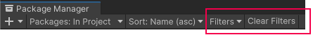
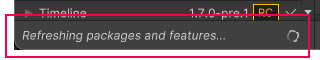

(A) The experimental package indicator, which warns you if your project contains experimental packages.
(B) The add button, which you can click to install a package directly into your project by entering a git URL, a local path, or a package name.
(C) The Packages menu, which you can use to change what appears in the list (context).
(D) The Sort menu, which you can use to sort the list of packages and feature sets by name or date.
(E) The Filters menu and the Clear Filters button display on all lists except the Built-in list. Filtering allows you to narrow down which packages appear in the list.

The Filters menu and the Clear Filters button
(F) The Advanced menu , which you can use to access the project settings for the Package Manager and more. See Advanced settings for details.
(G) The search box, which you can use to look for packages and feature sets by name.
(H) The list view, which displays packages that match the filter and search parameters you specify. The All tab lists all packages that meet your filter and search criteria, while the Services tab filters the list further to display services.
(I) The detail view, which displays information specific to the feature set or package selected in the list.
(J) The package details tabs, which display further information about the selected feature set or package. The tabs are dynamic, based on the selected item. For information about these tabs, see Details view.
(K) Buttons to perform any of the following actions at the project level:
(L) The status bar, which displays information when the Package Manager loads packages and feature sets. This information includes errors and warning messages, the number of Asset Store packages available, and a link to load more Asset Store packages.
(M) The Refresh list lets you refresh the list of packages displayed. In the My Assets context, Refresh list is a menu, which contains a Check for updates option, so you can check for updates to all packages on your computer; not just the ones that are visible in the My Assets context.
Advanced 设置
The advanced settings menu allows you to perform these actions:
- Add, edit, and remove scoped registries in your project. - List pre-release packages when browsing the Unity Registry. - See which packages the Package Manager installed as dependencies of another installed package (indirect dependencies).
Manual resolve
Select this item to force the Package Manager to resolve the project’s packages. If needed, it reinstalls altered or missing packages and removes extraneous packages.
Preferences
Select this item to view and set Preferences for the Unity Editor and related windows and tools.
Reset Packages to defaults
Select this item to return to Package Manager default settings.
Warning: This removes all customization from your project manifest file. Use this action only as a last resort when you can’t figure out what’s wrong with your project manifest file.
状态栏
Package Manager 在 Package Manager 窗口左下角的状态栏中显示消息。
通常，您可能会看到四种状态消息：
The first time you open the Package Manager window in a new project, the Refreshing packages and features message appears briefly:

Refreshing packages and features message
This message also appears when you click Refresh list
When the My Assets context is active, the load bar appears above the date. It displays the number of Asset Store packages and a Load link:
On the left, the load bar displays the number of Asset Store packages loaded and the total number available. Click Load to load more packages.
Most of the time the status bar displays the date and time of when the Package Manager window last refreshed its information. However, if the Package Manager detects a problem, such as a network issue, the Package Manager displays an error in the status bar:
Network error message
If your network connection is working, but you aren’t signed into your Unity account, the Package Manager doesn’t display any Asset Store packages. When you try to use the My Assets context, the Package Manager displays an error in the status bar:
Logged out of Unity account
In the list view, click Sign in to sign in to your Unity account through the Unity Hub.
 button, which you can click to install a package directly into your project by entering a git URL, a local path, or a package name.
button, which you can click to install a package directly into your project by entering a git URL, a local path, or a package name. , which you can use to access the project settings for the Package Manager and more. See Advanced settings for details.
, which you can use to access the project settings for the Package Manager and more. See Advanced settings for details. lets you refresh the list of packages displayed. In the My Assets context, Refresh list is a menu, which contains a Check for updates option, so you can check for updates to all packages on your computer; not just the ones that are visible in the My Assets context.
lets you refresh the list of packages displayed. In the My Assets context, Refresh list is a menu, which contains a Check for updates option, so you can check for updates to all packages on your computer; not just the ones that are visible in the My Assets context.